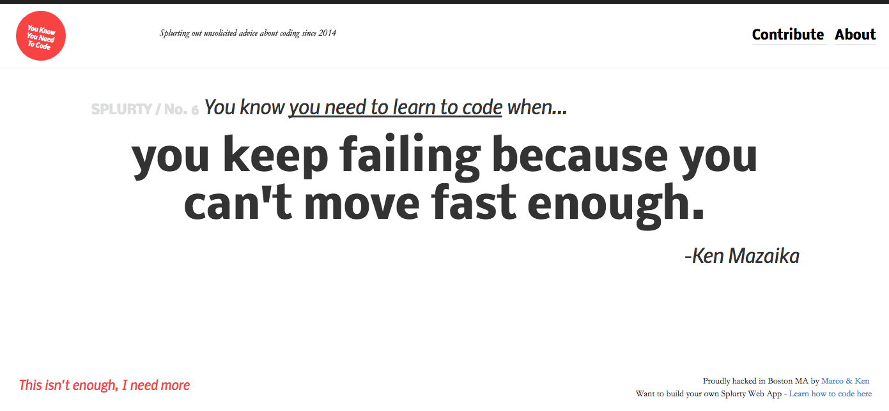

Claudwin Fortune
SOFTWARE ENGINEER
Hi, my name is Claudwin (Claude for short) Fortune and I'm a very self motivated individual
who love's challenges and is always looking for ways to better myself.
I'm currently pursuing a career as a full stack developer.
I'm currently enrolled at University of California Berkeley in the part-time coding bootcamp. Most of my days are spent working on different project to hone my skills as full stack developer my projects are currently available for viewing on my github account.
I enjoy learning and building apps from the ground up.
Code Snippets
Temperature Conversion
This Ruby program will prompt the user for a temperature
in degrees Celsius and let the user know what the
corresponding temperature is in Fahrenheit.
puts "Please enter a temperature in Degrees in Celsius"
tempC = gets.to_i
def convert_to_f(n)
return n * 1.8 + 32
end
puts "#{tempC} Celsius converted into Fahrenheit is #{convert_to_f(tempC)} degrees"
puts "Enter a number"
number = gets.to_i
def ordinal(number)
remainder = number % 10
if remainder == 1 && number != 11
return "st"
elsif remainder == 2 && number != 12
return "nd"
elsif remainder == 3 && number != 13
return "rd"
else
return "th"
end
end
puts "The ordinal for your input(#{number.to_s}) is #{number.to_s}#{ordinal(number)}"
Ordinal Challenge
This Ruby program will convert a plain number
to the ordinal of the number. So for example,
if the user enters 2, it will display 2nd, if
the user enters 3, it will display 3rd, etc.
Foobar
This Ruby program is an adaptation of a classic technical
interview problem which displays sequences
of the Foobar pattern.
puts "How many items do you want to see"
user_input = gets.to_i
user_input.times do |count|
count += 1
divisible_by_3 = count % 3
divisible_by_5 = count % 5
if divisible_by_3 == 0 && divisible_by_5 == 0
print "foobar "
elsif divisible_by_3 == 0
print "foo "
elsif divisible_by_5 == 0
print "bar "
else
print "#{count} "
end
end<
Web Apps
Quote Generator

A database-powered quote generator with a mobile-first
design, using the Ruby on Rails framework, HTML, and CSS.
Uses Git and GitHub for version control, and launched
on Heroku.
Yelp Clone

A Yelp clone that integrates with the Google Maps API
and includes features like user comments, star ratings,
image uploading, and user authentication.
Two-Sided Market Place

A two-sided, video-streaming marketplace platform that
features credit card payment capabilities, user role
management, complex user interfaces, and advanced
database relationships.
Test Driven Development

An Instagram clone that was built using industry-standard, test-driven
development following numerous red/green/refactor cycles.
Single Page Todo Application

This single-page to-do application features a
fluid user interface that– by using JavaScript–
allows users to rapidly add dynamic content.
Agile Team Project

Worked on an Agile software development team building
a chess application. Under the guidance of a senior software engineer,
we had weekly Agile team meetings for code reviews, sprint planning,
and feature assignments.
Claudwin has developed proficiency and expertise
in the following programming languages and
comfort with the following tools.